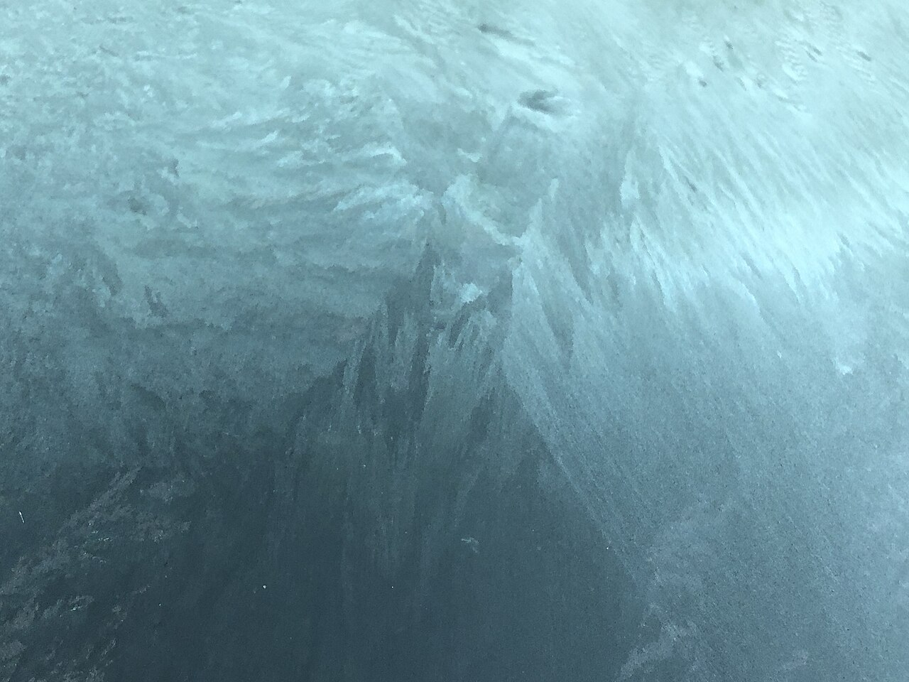

The Fastest SAFE Way to Defrost Your Windshield
Hot water can crack your windshield in one pour. The fastest safe defrost is heat, A/C, and a scraper.

Photo: Famartin, CC BY-SA 4.0, via Wikimedia Commons

You're already late, the windshield is frosted solid, and the internet has a hundred hacks: boiling water, vinegar, rubbing alcohol, a credit card. Most of them are either slow, useless, or actively damaging. There is a fastest safe way to defrost a windshield, and it's not a hack — it's using the car's own systems the way they were designed, plus a scraper. Five minutes, clear glass, nothing broken.
Why it's wrong
Pouring hot or boiling water on a frozen windshield is the most dangerous shortcut there is. Glass expands when it heats up, and a sudden blast of hot water on glass that's well below freezing causes thermal shock — if there's even a tiny stone chip, the windshield can crack straight across in one pour. Scraping a dry, frosted windshield with a metal edge scratches the glass. Using the wipers to clear frost tears the rubber blades. And the viral vinegar or alcohol sprays are mostly a distraction: they can help loosen light frost, but they don't replace heat and a scraper on a properly frozen windshield. The fastest way is also the simplest — it just isn't a viral video.
The right way
- Start the car and set the defroster to full heat, full fan. Aim all the air at the windshield. Heat from the inside loosens the frost's grip from underneath — that's the fastest thing working for you.
- Turn the air conditioning ON. This is the trick most people miss. The A/C dehumidifies the air, which clears interior condensation far faster than heat alone. Heat plus A/C together is the fastest defrost combination your car has.
- Crack a window slightly. A small gap lets humid air escape instead of fogging the glass again from the inside.
- Spray de-icer on the outside. A commercial de-icer spray melts the frost layer in a minute or two. Lukewarm water works in a pinch — never hot, never boiling.
- Scrape with a plastic scraper while the heat works. Long, firm strokes. The heat loosens the frost from below, the scraper takes it off from above, and together they clear the glass in minutes.
- Clear everything, not just a peephole. All the glass, the mirrors, the lights, and the snow off the roof. A dinner-plate hole to see through is dangerous.
- Prevent it tonight. A windshield cover or an old towel under the wipers means no frost at all in the morning. Parking facing east lets the morning sun do some of the work.
The rundown
Full heat, A/C on, window cracked, de-icer outside, plastic scraper in hand. That's the fastest safe defrost — about five minutes, no cracked glass, no torn wipers. And the fastest defrost of all is the one you don't need: cover the windshield tonight.
← Back to the full winter checklist